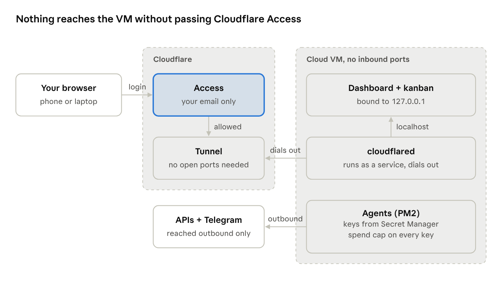

One Header Bypassed My Login: Hardening a Self Hosted AI Agent Stack
I run a boss agent that coordinates a handful of workers. They write, research, build and report back to me on Telegram. They live on a cloud VM with API keys, a shell, a git remote and a kanban board my family uses every day.
That is a remote shell with a credit card attached. So I did what I would do for any new system at work: I stopped building for a weekend and audited it like an attacker who already had a foothold.
It was worse than I expected, and the worst finding was not where I was looking.
The setup
Two VMs on GCP. One runs the agents under PM2 with a dashboard on port 443. The other runs Caddy, which serves my public site and reverse proxies the kanban app sitting on 127.0.0.1:5051. DNS and edge are on Cloudflare.
On paper it looked reasonable. In practice, both VMs had firewall rules allowing 0.0.0.0/0 on 80 and 443, and the agent dashboard answered on a public IP.
First fix was the obvious one. I moved both private hostnames behind a Cloudflare Tunnel with an Access policy that allows exactly one email. The VM’s cloudflared dials out, so nothing needs to listen publicly. I opened the dashboard in a private window, got the Access login page, and felt good about it.
Then I tested the thing I always tell other teams to test.
The finding: one header away
The kanban app still sat behind Caddy on a VM with a public IP, because that same Caddy serves my public site. Caddy picks a site block by hostname. So I skipped Cloudflare entirely and asked the VM directly, pretending to be the private hostname:
curl -sk --resolve kanban.example.com:443:<VM_PUBLIC_IP> https://kanban.example.com/It returned the board. No Access prompt, no login, nothing. Every request through the front door was protected. The side door was wide open, and it only needed one forged Host header.
This pattern is common anywhere one reverse proxy serves both public and private sites: the identity gate lives at the edge, but the origin will still answer anyone who knows the right name. Scanners do not need your DNS. They hit IPs and try hostnames from certificate transparency logs.
The fix took five minutes. The private site block now refuses anything that did not come from the tunnel connector’s internal address:
kanban.example.com {
@notTunnel not remote_ip <CONNECTOR_INTERNAL_IP>
abort @notTunnel
reverse_proxy 127.0.0.1:5051
}I also rebound the app to localhost only. Both bypass tests now fail, and the board still loads through Access. Then I pulled 30 days of Caddy logs to see whether anyone had found the side door before I did. After an exposure, that is the question that matters.
The near miss I did not see coming
My agent harness is open source. I had cloned it, and my VM had 17 local commits on top of upstream: my agents, my status files, my notes on costs and infrastructure.
While moving everything into a private repo, my AI coding assistant hit a push error and helpfully suggested a fix: add a deploy key with write access to the origin repo. The origin was the public upstream project. I do not own it, and one more push would have published my operating notes to everyone who watches that repo.
Nothing malicious happened. The assistant was solving the problem in front of it. That is exactly the risk: agents optimize for “make the error go away,” and they will cheerfully take the shortest path through your security boundary.
The fix is boring and permanent:
git remote rename origin upstream
git remote set-url --push upstream DISABLED
git remote add origin git@github.com:<you>/<private-repo>.gitNow a push to upstream fails by design, and each private repo gets its own deploy key scoped to that one repo.
The rest of the list
Once I started looking, the gaps stacked up fast:
- Keys everywhere. API keys and bot tokens lived in
.envfiles any agent with file tools could read and print. - No spend caps. Model keys had no limits. A stuck retry loop on a top tier model can burn a month of budget overnight, and a cloud budget only sends an email. It never stops anything.
- Chat as a control plane. My boss agent takes orders from Telegram. Bot usernames are public. If the bot does not check the sender’s user ID, anyone who finds it can give it commands.
- Read plus act. Agents that read web pages or email could also run shell commands. That is the prompt injection kill chain: untrusted text in, privileged action out.
What fixed it
The principle is simple: the VM accepts nothing from the internet. Every connection starts from inside it.

- Outbound only. cloudflared dials out to Cloudflare. Telegram is polled, not pushed. With both, no firewall rule needs to open a port to the world.
- Identity at the edge, verification at the origin. Access in front of every private hostname, and the origin refuses anything that did not come through the connector. A misconfigured route now fails closed.
- Secrets agents cannot read as text. Keys move to a secret manager. Better still, where a provider supports workload identity, there is no key to steal at all.
- Caps on everything that meters. Every model key gets a spend limit. The cloud budget alert feeds a small function that actually stops tagged VMs. A budget that only emails you is a receipt, not a control.
- Split reading from acting. Agents that touch untrusted content cannot send, post, spend or run a shell without a human approval in between.
- Bots obey one user ID. Anything else gets ignored.
Hardening is a loop, not a weekend
A checklist goes stale the day you finish it. New CVEs land daily in the harness, the model SDKs, npm and PyPI packages, MCP servers and the OS under all of it. Agent tooling is a supply chain target now.
So I gave the problem to an agent with tight limits. Every morning a security agent:
- Builds an inventory of everything the agents run (
syft, plus the OS package list). - Scans it against known vulnerabilities (
osv-scanner,npm audit,pip-audit). - Checks the CISA Known Exploited Vulnerabilities catalog and the advisories for every repo I depend on.
- Treats anything actively exploited, or reachable from outside content, as urgent and messages me the same day.
- Patches on a branch, tests, and waits for my approval before merging.
Every week it re-runs the entire checklist to catch drift: a port that reopened, a key without a cap, a permission that grew.
It is allowed to improve itself, with two limits. It can add checks and tighten rules, but it can never remove a guardrail or widen its own permissions. And it cannot edit its own instructions. Another agent proposes those changes, and I approve them. A self improving agent without that rule is also a self weakening one.
Checklist
Run these before you close this tab:
- Raw IP test.
curl -sk --resolve <private-host>:443:<VM_IP> https://<private-host>/must fail. - Open ports.
gcloud compute firewall-rules list(or your cloud’s equivalent) shows nothing open to0.0.0.0/0that is not meant to be public. - Dashboards on localhost.
ss -tlnpshows them bound to127.0.0.1, not0.0.0.0. - Login gate. Open each private URL in a private window. You get a login page, not your app.
- Secrets in git. Run a secret scanner across your full history, not just the current tree.
- Spend caps. Every model API key has a monthly limit set in the provider console.
- Bot allowlist. Message your bot from a second account. Nothing happens.
- No public push.
git remote -vshows any upstream you do not own with its push URL set toDISABLED. - Agents as non root.
ps -o user= -p <pid>shows a service user with no sudo. - A heartbeat. Something messages your phone when an agent dies or the disk fills. Silent failures look like quiet days.
Briefing line for leadership
An identity gate at the edge is not a control if the origin still answers the internet. Verify at the origin, and test the side door, not just the front door.
The full kit
Those ten are the start. The full field kit has 64 checks across secrets, network exposure, chat surfaces, prompt injection, MCP servers, cost runaway, logging, backups and supply chain, each with the exact command to verify it, plus the continuous hardening loop, real configs, and a 30 minute incident playbook.
The Agent Hardening Kit: https://blackbelthacker.gumroad.com/l/qizknf
Free updates as the threats change. If you find a gap I missed, tell me.